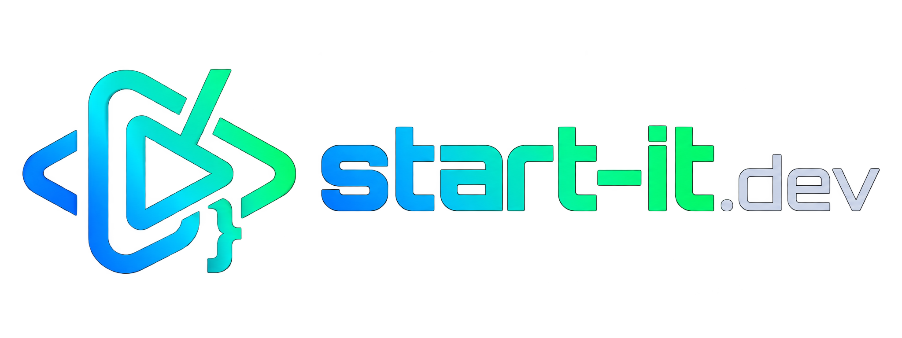
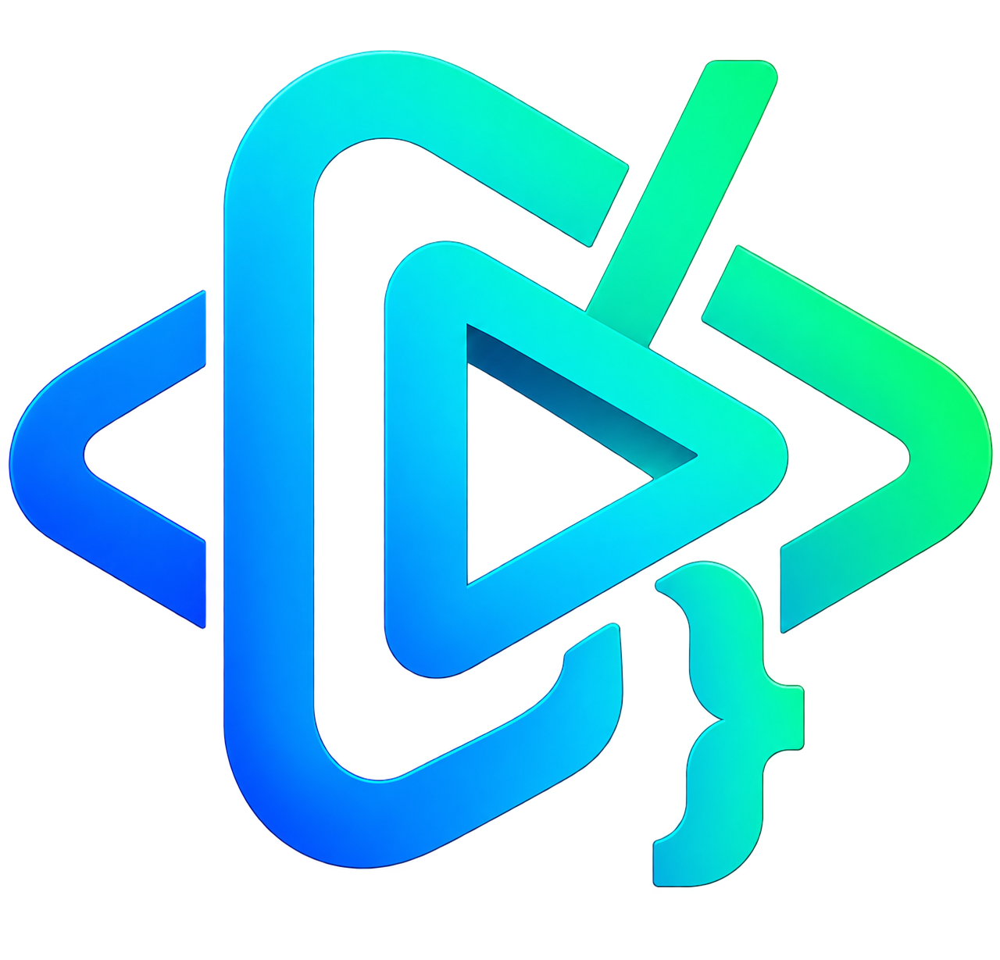

Aprendo. Creo. Comparto. Documentando el camino, construyendo soluciones y devolviendo a la comunidad.

Explorando nuevas tecnologías, resolviendo bugs y documentando todo el proceso. Un espacio para el *Learning in Public*.
Construyendo proyectos, desde scripts sencillos hasta aplicaciones completas. Aquí encontrarás mi portafolio y experimentos.
Escribiendo tutoriales, publicando código en abierto y compartiendo recursos para que otros developers puedan avanzar más rápido.